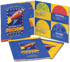

C++ Experience
I've developed applications in C and C++ for OSX, Windows, and unix platforms, using a variety of development environments. These projects have ranged from large consumer products to plug-ins and utilities.
Starry Night
Simulation Curriculum produces Starry Night, an awarding-winning astronomy application written in C++ and available for both Windows and OSX.While preparing the product for a major new release, they asked me to add some new features, including exoplanet modeling, as well as upgrading the application security and resource handling.
Watch Rho Cancri rise, from the surface of Rho Cancri e!
MobileOffice iPhone/iPad App
RCO, Inc produces the MobileOffice app for iPhone and iPad, an office database client written in Objective-C that interfaces with their data server via RESTful API.
I created several features, including the background sync of data between the server and the device, mapping and calendar functionality.
Check out MobileOffice in the RCO app store!
Minimod iPhone Apps
These educational iPhone apps produced by eSkills Learning provide practice in specific essential skills using both tutorial and competitive game formats.
I created a series of production scripts in perl to prepare the content, and created the app functionality for the iPhone in Objective-C.
Check them out in the Minimod app store: Vocabulary Builder, Vocabulary Expander, Homophones, Analogies, Word Structure, Nouns, Verbs, Singular and Plurals, Context Clues, Context Clues - Advanced, Context Clues - Science, and Context Clues - Social Studies.
eSkills Learning, LLC. hired me to develop of a series of educational iPhone apps in Objective-C.
UDBS-Plus Billing System

Open Platform Group hired me to finish porting and add new features to UDBS-Plus, a utility billing system owned by Yukon Telephone.
Originally written in PowerBasic, UDBS-Plus is a Windows application written in C++ and wxWidgets, using MySQL to handle the data.
Scholastic Data Migration Utility
Scholastic, Inc. needed a tool to enable their customers to migrate Read 180 data into a new format. I developed it in C++ for both Windows and OSX.
Scholastic Read 180 Edit Tools
In preparation for a new release of Read 180, Scholastic, Inc asked me to overhaul and make useable a set of production tools written for the OSX in C++.
Starry Night Podium
After acquiring Starry Night in 2009, Simulation Curriculum hired me to do some additional upgrades to the C++ code, including preparing their Podium product for a new release. Podium allows the Starry Night code to operate with a client/server model, one computer controlling the interface, while a separate computer controls the projector.Podium is used in consumer software such as Spitz Inc.'s SciDome.
Interactive Phonics System
Scholastic, Inc contracted with me to produce a series of phonics projects. The first was the Scholastic Phonics Readers, a 12 CD set of interactive stories and activities. Scholastic provided the assets, while I provided the technical design and either completed or managed the programming. I developed an engine in Macromedia Director which brought together database information and graphic and audio assets to produce a director file for each portion of the program. This approach enabled us to produce a set of 12 CDs, encompassing 72 stories, 216 activities, 72 tests, and a teacher managment section, and using approximately 26,000 assets, in slightly less than a year.
Another programmer and I also developed the management portion of the product in Director. This included the student login and teacher management section, which used the v12 database xtra to keep track of student activity.
In addition to programming the product itself in Director, I created or managed the creation of several production utilities in C++ and Quicktime, Director, Delphi, and perl.
Following the Phonics Readers, we developed the Scholastic Phonics Booster Books, an 8 CD set of 36 additional readers and activities.
Check out the flash demo of the series on Scholastic's site.